How to use inksplat
inksplat is a shared whiteboard over a live screen. One person starts a session and sends a link; everybody who opens it sees the same board and draws on it. This page shows the tools, how to share pictures and files, and the shortcuts that have no button.
1. Start a session
On the home page press Start presenting. You become the presenter: the host of the session. There is no account and nothing to install.
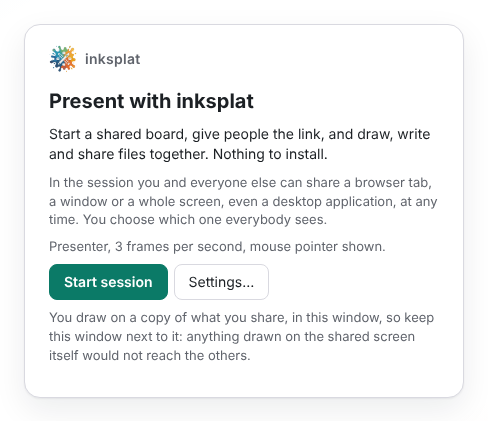
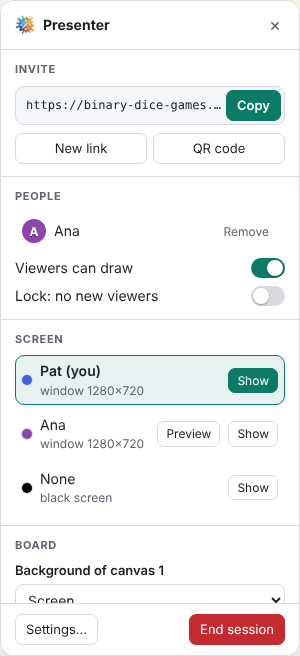
The Presenter panel on the right holds everything only you can do:
- Invite: Copy the link and send it to people. QR code shows it for a phone camera. New link makes a fresh one.
- People: who is here. Remove sends someone away. Turn off Viewers can draw to make the board read-only for viewers, and turn on Lock to keep new people out.
- Screen: the screens on offer, and which one everybody sees (see Share a screen).
- Board: the background of the canvas you are on, Clear drawings (lines, text and stickers only), Clear all (everything), and Save… / Open….
Controls (in the bar at the bottom right) folds the panel away and brings it back. End session closes the session for everybody.
Keep the presenter page open: closing or reloading it ends the session (the page asks first). The page keeps a backup of the board in your browser; the next session offers to Resume it.
2. Join a session
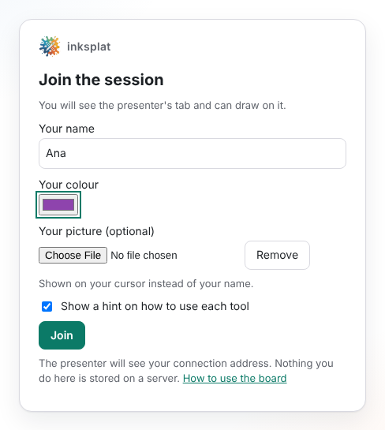
Open the link you were sent (or scan the QR code). Type your name, pick a colour, and press Join. You can add a small picture of yourself: it is shown on your cursor instead of your name.
Everybody sees everybody's cursor, with its name, on the canvas they share. Your name and picture stay in your browser for the next time.
The bar at the bottom right has Share screen, the number of people (click it for the list), Full screen, Tools (folds the toolbar away to just watch), and Save… / Open….
3. Share a screen
Anybody in the session can press Share screen and pick a browser tab, a window (any application) or a whole screen with the browser's own picker.
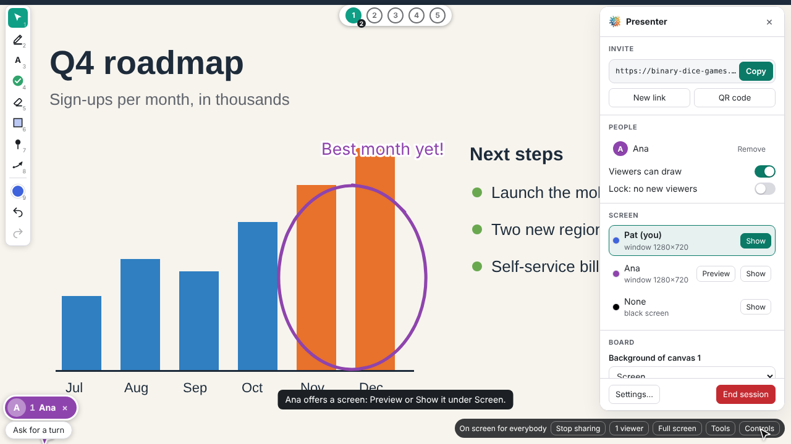
- The presenter's own screen is shown to everybody at once. A screen offered by a viewer is shown only when the presenter picks it.
- The video is a few frames a second: fine for slides, documents and code, not for films.
- Draw in the inksplat window, not on the shared window. The drawings are a layer over a live copy of the screen. Anything drawn on the shared window itself would not reach the others, so keep the inksplat window next to it.
- Press Stop sharing (or the browser's own bar) to stop.
4. The toolbar
The toolbar sits on the left. The small number next to each tool is its key:
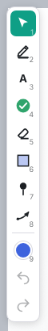
| Key | Tool | Press the key again for |
|---|---|---|
| 1 | Pointer | Laser, emotes, magnifier |
| 2 | Pen | Another width |
| 3 | Text | Another size |
| 4 | Sticker | The next sticker |
| 5 | Eraser | |
| 6 | Sticky note | Another shape |
| 7 | Pin | Another shape |
| 8 | Thread | Other arrow heads |
| 9 | Colour | The next colour |
Pressing the same key again goes through the tool's options. Clicking a tool that has options opens a small panel with all of them:
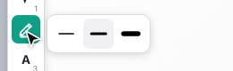
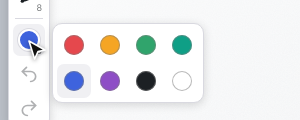
A faint line under the canvas buttons says, for a few seconds, how to use the tool you just picked. Turn it off in Settings (presenter) or on the join form (viewers).
5. Draw, write and stick
Pen 2
Drag to draw. Press 2 again for a thicker or thinner line.
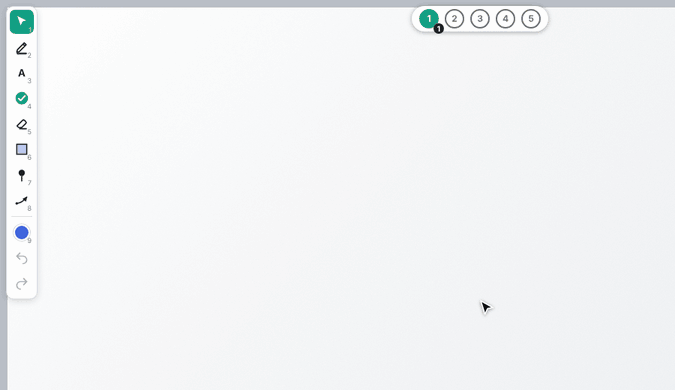
Text 3 and stickers 4
With the text tool, click where the text goes, type, and press Enter (Shift+Enter for a new line, Esc to drop it). With the sticker tool, each click puts a sticker down; press 4 again for the next one (tick, cross, question mark, stars, emoticons…).
Back on the pointer, Shift+drag a sticker to make it bigger or smaller, and Ctrl+drag to turn it.
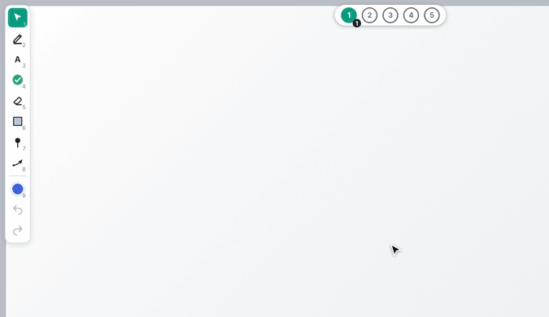
Eraser 5, undo and redo
Drag the eraser over what to remove: it is marked as you go and removed when you let go. The arrows at the bottom of the toolbar undo and redo your own changes. While a drawing tool is in hand, Ctrl+Z undoes and Ctrl+Y (or Ctrl+Shift+Z) redoes too; with the pointer those keys are left to the page. On a Mac use Cmd instead of Ctrl.
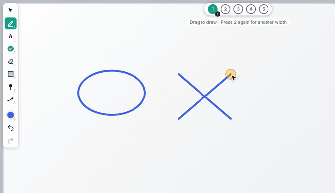
6. Sticky notes, pins and threads
Sticky notes 6: click to put a note down, or drag out the size you want. Click a note to write on it; click away (or Ctrl+Enter) to finish. Press 6 again for another shape: square, rounded, oval, diamond, hexagon. Resize a note from its corner.
Pins 7 put bare pins on the board, in five shapes. Threads 8 hang between pins, like on a detective's board: press on a pin (every note, picture and link has one), drag to another and let go. Letting go over a note, picture, link or sticker puts a new pin there. Press 8 again for arrow heads: none, at the source, at the destination, or both.
- Drag a pin to move it. Threads follow the pins they hang from.
- A pin put on a note, picture, link or sticker stays on it when that moves, turns or scales.
- Drag a note, picture or link by its pin onto another one to attach it: it is drawn on top and moves, turns and scales with it.
7. Select, move and change
With the pointer 1, drag anything to move it. Click it to select it: a bar appears over it to change it (colour, shape, text size, lock…). Delete or Backspace removes what is selected, Esc deselects.
To select several things, drag from an empty place: everything the line passes over is selected. Drag any of them to move them all, or press Delete.
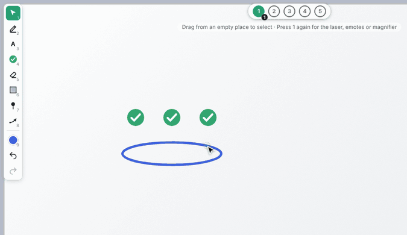
- Ctrl+C, Ctrl+X and Ctrl+V copy, cut and paste the selection. It is pasted where the mouse is, on the canvas shown.
- Anybody can change anybody's drawings. The owner can lock one from the bar over it: locked for the others (only the owner can change it) or locked for everybody.
- Select a note to copy its text, or double-click a note you cannot change to copy its text.
- Stickers and links scale with Shift+drag; pictures and files resize from their corner; everything turns with Ctrl+drag (what is pinned turns about its pin).
8. Point at things
The pointer 1 has four modes. Press 1 again to go through them, and Esc to come back to the cursor.
- Cursor: the usual one.
- Laser: dragging leaves a glowing trail that fades in a second.
- Emotes: press, move towards a face on the wheel and let go (or click, then click a face). It floats up and fades; anybody who clicks it while it lives makes it bigger.
- Magnifier: a round lens next to the cursor enlarges the screen and the drawings under it, to read small text. The mouse wheel changes how much. Only you see it.
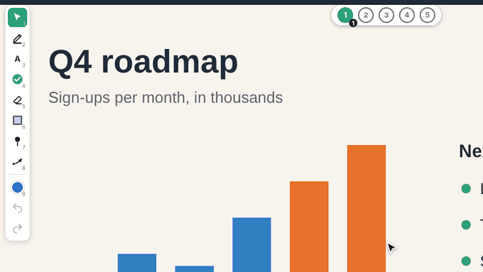
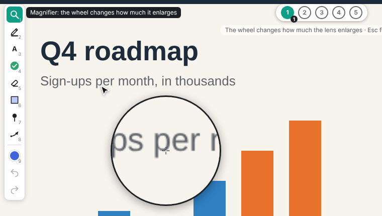
9. Share pictures and files
Drag files from your computer and drop them on the board. Everybody in the session gets them. There is no upload button: dragging is the way in.
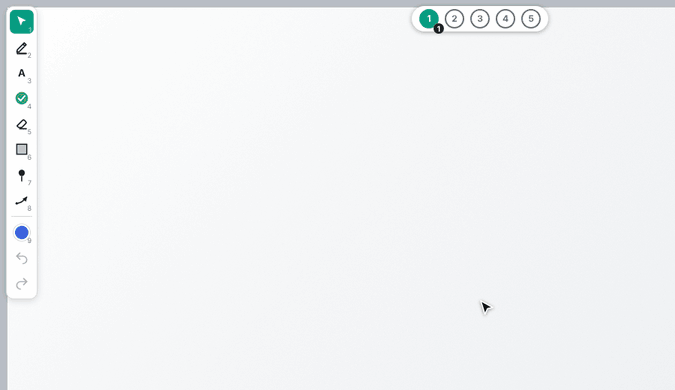
- Pictures (PNG, JPEG, GIF, WebP…) are pinned on the board as they are. An animated GIF moves. Resize a picture from its corner and turn it with Ctrl+drag.
- Other files, up to 5 MB each, are pinned as a card with a preview: the first page of a PDF, the text of a Word, Excel, PowerPoint or OpenDocument file. Up to five files can be dropped at once.
- To take a copy: Shift+drag a picture or file card out of the browser onto your desktop or into another application (a plain drag only moves it on the board), or double-click it to save it.
- Big files take a moment to reach everybody; until then the card says The file is still arriving….
Cut-out pictures and links. A picture with a transparent background is cut out: its border and shadow follow the shape. A web address pasted with Ctrl+V, or dragged from the browser's address bar onto the board, becomes a card; click it (with the pointer) to open the page in a new tab.
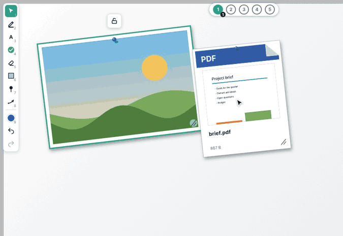
10. Canvases, zoom and pan
The round buttons at the top are five canvases, each with its own drawings and background. The small number on each is how many people are on it. Everybody picks their own canvas and sees the cursors of those on the same one.
By default canvas 1 shows the shared screen, and the others a whiteboard, a blackboard, a wall and a cork board. The presenter changes the background of the canvas they are on under Board in the controls.
Zoom with the mouse wheel: it zooms where the mouse is. Zoomed in, Space+drag (or a drag with the middle button) moves around. 0 goes back to the whole view. Zooming is only for you.
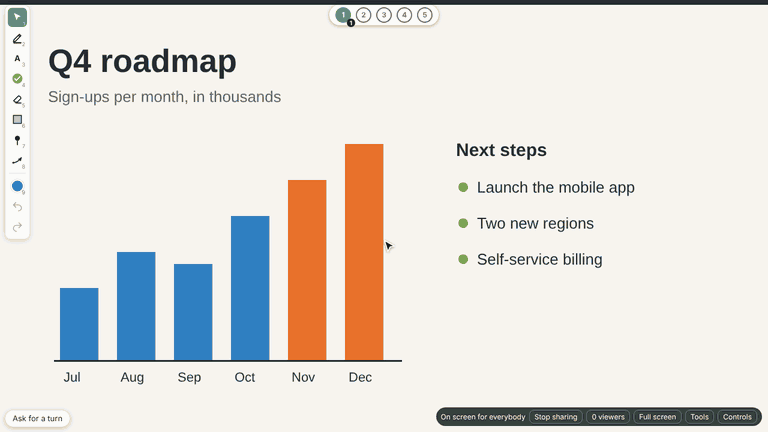
11. Speaking turns
Ask for a turn (bottom left) puts you in the speaking queue, which everybody sees above the button. Press it again to leave the queue, or to end your turn when it comes. The presenter can take anyone off the queue.
12. Save and carry on later
Save… keeps the board in one of three ways:
- Picture (PNG) and Drawing (SVG): the canvas shown.
-
Board file (
.inksplat.zip): all five canvases, with the notes, threads, pictures and files on them. Open… it in a later session to carry on; everything in it becomes yours there. Any zip tool shows what is inside.
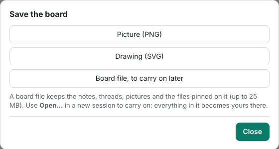
Nothing is stored on a server: if nobody saves, the board is gone when the session ends.
13. Hidden shortcuts
Things that have no button. Ctrl is Cmd on a Mac.
| Do this | To |
|---|---|
| 1 … 9 | Pick a tool; the same key again goes through its options |
| Esc | Deselect; leave the laser, emotes or magnifier; go back to the pointer |
| Delete / Backspace | Remove what is selected |
| Ctrl+Z, Ctrl+Y | Undo, redo (with a drawing tool in hand; the toolbar arrows work always) |
| Ctrl+C / X / V | Copy, cut, paste the selection (pasted at the mouse) |
| Drag from an empty place | Select everything the line passes over |
| Shift+drag a sticker or link | Scale it |
| Ctrl+drag | Turn a sticker, note, picture, file or link |
| Shift+drag from a pin | Pull a thread, whatever tool you hold |
| Drag a note, picture or link by its pin onto another | Attach it, so they move together |
| Drop files on the board | Share pictures and files (up to 5 MB each) |
| Ctrl+V a web address, or drop a link | Pin a card that opens the page |
| Shift+drag a picture or file out | Copy it to your desktop or another application |
| Double-click a picture or file | Save it |
| Double-click a locked note | Copy its text |
| Click an emote as it floats | Make it bigger |
| Mouse wheel | Zoom at the mouse (with the magnifier: change the lens; Ctrl+wheel still zooms) |
| Space+drag, middle button drag | Move around when zoomed in |
| 0 | Back to the whole view |
The keys work whenever you are not typing in a text box or a note.
14. If people cannot connect
inksplat has no server: browsers find each other through public trackers and then talk directly. Some office or school networks block that. A viewer who stays on Connecting… can open Cannot connect? Join with a code, make a code, and send it to the presenter (by chat or mail). The presenter pastes it under Join codes in the controls and sends the answer back.
What leaves your computer, and where it goes, is in the privacy policy.